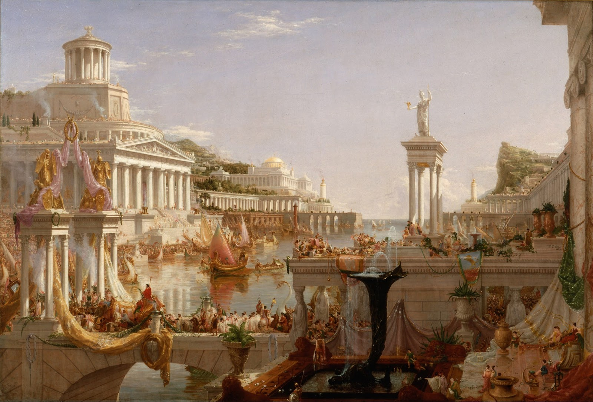
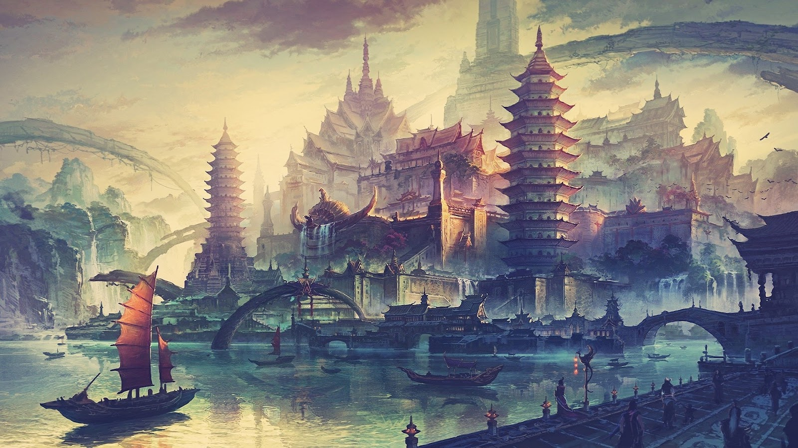
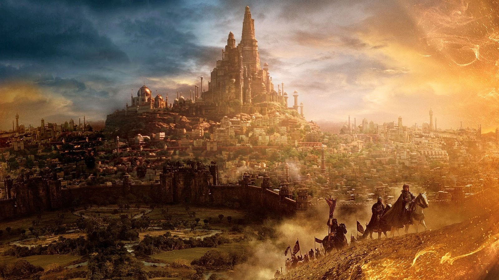
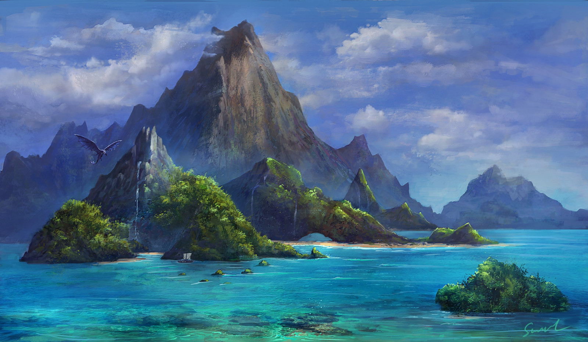
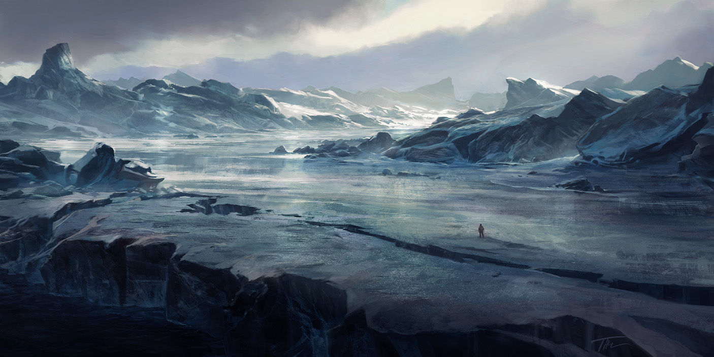
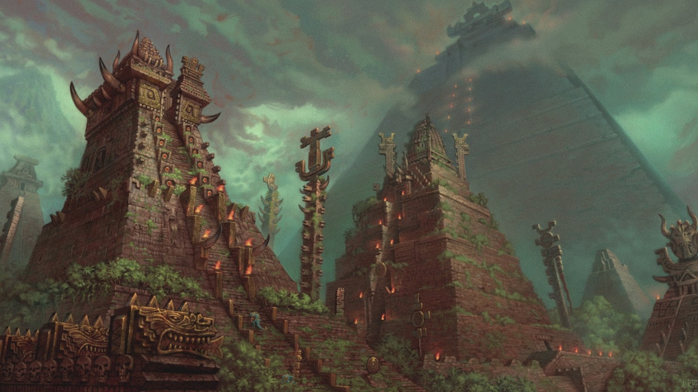

Through the many ages, many great kingdoms had come and go, rising to power and falling to ruin. Through the many ages, the many varied races of this world waxed and waned, fighting with each other, amongst themselves, or cooperating together to build sprawling civilisations. Much of this world lies untamed, with a few thriving hubs of civilisation, ruled now in majority by Mankind, in their age.
The continents were named long ago, in an ancient Draconic tongue from the First Age of Dragonkind, and these names have slowly filtered down, warped, and sometimes changed, to the ones used today. The names provided are those used predominantly in the Great Kingdom of Rivian.
### Contents
*
World Eras
*
Regions
The World Eras
### Introduction
The world of Caeleste Mare is broadly split into three eras, with seven (sometimes seen as six) ages throught. The world itself is just over 1.2 million years old, with the inner planes existing only for the latter 200 thousand years. Rivenian and Parsii scholars have placed the true year date at 201,761 years since creation (of the material plane), and similarly Asyrian scholars place it at 201,760. However, in the Ancient Empire ancient records suggest a time before the material plane, and scholars and philosophers have placed the year at anywhere between 8,020,760 to 15,132,260 years since true creation.
### The Three Eras and Seven Ages
In the beginning, there was nothing, but the Ancients: the Old Gods. Over the span of a hundred thousand years, they formed their far realms, and prepared to create the near ones. There was no life but them, and there was only a dark sea. Thus the first era is called the **Dark Era**.
> Only one age existed in this Era, the **Age of Ancients**, lasting **10,000,000 years**.
Then, came the light. The three near realms were made: the Deep Dark, the Twilight Vale and the Material Plane. With these came the many races of this sea, modelled after the gods themselves. From the dragons of Xiron and Asyr, to the humans of Kleios and Estia, to the demons and shades of Golmak, they walked the near realms. This was a time for these races to grow and develop, and much has been lost in the mist of time. Thus the second era is called the **Ancient Era**.
> The **Age of Fire** came first, lasting **179,750 years**. This was when the various races started to flourish, and develop. It saw various civilisations start to form. Before written history, and before great empires, much of this time was lost.
> Then came the **First Age of Dragonkind**, lasting **6,090 years**. This was when the first true kingdoms and empires were formed, and when dragonkind predominantly ruled the land. It saw the rise of the Ancient Empire, and the precursor to the Parsii Empire.
> Next came the **Age of Steel**, lasting **2,850 years**. This was a moment of chaos, when dragons did not wholly rule the land. The defining moments were the fracture, and great civil war of the Ancient Empire, and the fall of western civilisation almost entirely, due to some unknown cause. It was in the latter half of this era that a burgeoning classical republic in Dacrame, Rivianum, started to emerge into prominence. It also saw the use of refined steel taking hold.
> The **Second Age of Dragonkind** came, as the Ancient Empire reunified. This lasted **9,910 years**. During this time Rivianum, now the Empire of Rivian, ruled the west from their duel capital of Rivianum and Ricarum, to be renamed the Citadels of Light and Shadow. Dragons, again, ruled elite.
In the year 127,590, the world collapsed. Massive wars throughout the many lands, famine, hunger and unrest. This unrest, and chaos, mainly in Parsor and the west, marked the twilight years of the second age of dragonkind. Historians marked the end of this era as when Caesar Mirmos of Rivian formally handed his crown over to a human ruler, as the once great empire fell like fine sand through his claws. This is the era we live in now, and is called the **Common Era**.
> A short era, the **Age of Rebirth**, came first, lasting only **170 years**. There was so much distinct turmoil during this time, in all corners of the world, that it rose distinct from any era before or after it. This was a time when the great empires of the west fractured into smaller kingdoms, tribes, and city-states, all in competition with one another. This was a time of many wars, much suffering, but also much innovation and free thought. For Dacrame, this was a rebirth of sorts. Radical ideas spread across the western world, through Parsor, and even the deserts and mountains of Central Aseron, upending empires and pushing over old ways. Famine after Famine hit the Yin Dynasty of the Ancient Empire, the last major draconic empire in the world, putting them on the inevitable path of collapse.
Finally the current era is the **Age of Humanity** which lasts until the present. The year is **447 AH** in Rivian and the West, and **157 Shang** in the Ancient Empire.
Regions

## Dacrame, the Known World
【
REKH】
DIR KROMEA【中】夕洲
*The Iridescent Land, as named in Draconic*
Dacrame is the land upon the Great Blue Sea, the stronghold of civilisation since the Age of Steel. At its beating heart lies the still strong remanant of a great empire, serving as the centre of trade and culture of the western world. The land is fractured, many kings and emperors ruling small parcels of land, locked in endless competition. Here is young ideas flourish: the pantheons of Gods both old and new; the philosophy of morality, thought, and existence, all discussed, pondered and written into scriptures that would fit great libraries for powerful kings.
Comparatively, though, Dacrame harbours younger empires than several other places within the Material Plane.
The borders of Dacrame stretches from the Insel Fries in the west, to the Drakou and further the Jugalvisk mountains in the East, from the furthest south island of Hélios to where civilisation ends in the North.
## Aseron, the Far East, the Land of Ancients
【
REKH】
ASIIRON【中】晏洲（晏同安）
*Asiiron, "Of Asyr Shai", the land where the dragons were born, and thus where Asyr bestowed her grace*
The lands of Aseron are mysterious and ancient, with a history and a civilisation spanning multiple millenia, back to the first Age, the Age of Fire. Since long ago a tentative trade network has flowed between east and west, from the far east to Dacrame, yet still the two sides know little about each other, only hearing vague tales and stories.
None known have yet dared the perilous journey east, but rumours say that should they make it, they will be welcomed into the Ancient Empire of the East, where the palaces and temples are gold and blue shingle, and all, even dragonkind, bow to their Emperor, Son of Heaven.
It is said that the dragons were born here, around the *World Spring*, deep within the western mountains, yet few if any have ever dared venture further west, as these holy mountains carry deep secrets, that affect the primordial magical energy that permates the world.


## Aseron, the Near East, Deserts of Sun and Twisted Flax
【中】皇沙
In the heart of the continent of Aseron lies a gargantuan mountain chain, splitting the continent in two. To the east, lies the fertile river valleys of the Ancient Empire. To the west, is noguht but arid plains, desert, and wasteland.
From this desert land arose another civilisation, with its centre at the *Empire of Sun and Twisted Flax*, Parsor, that ruled the few rivers and desert oases, stretching once from the borders of Dacrame to the Leviathan Wastes in the far east.
Parsor has since antiquity facilitated a small trade between the kingdoms of Dacrame and the dynastic empire in Aseron, but within that mountain chain lies deep secrets, that affect the flow of magic, preventing true communication across it.
## The Sea of Shattered Stars
【中】碎星海
*Named after the sparse islands that inhabit the sea*
Surrounding Aseron is an endless sea. Travelling east, the continent breaks up and makes way for countless islands, scattered over a stretch of ocean so vast none from the mainland have crossed it.
These islands range from the size of craggy rocks to hundreds of miles wide, and the Asyrians have termed these islands the "Shattered Stars". Thus, arises the name of the sea.
The Sea of Shattered Stars is sparsely populated, and the seas and islands are often home to ferocious beasts, that make human colonisation difficult if not impossible. No great power known has established itself within these islands, and the distance between them make even flight difficult.
Of the habitable islands, ordinary people make up the comparative minority, with most people possessing either some magical or martial ability. The idea of State and Empire has never permeated this realm, and islands are often controlled by martial clans and magical sects, than kings and emperors.


## Marakar, the Land of Eternal Winter
【REKH】MARAKAI【中】永寒
*The Land of Eternal Winter*
North of the Insel Fries, north of the Visigean Tribes and Tarkarvia, is a hostile place covered in eternal winter. The Kingdoms in Dacrame know only that their north shore borders a frigid sea, beyond which is presumed to be a vast archipelago, the lands getting colder and colder with each step further. Those in Aseron know of an unexplored and hostile land, past the Dongping shore, where mysterious tribes peoples practice their eldritch rituals. This hostile place is far beyond the control of any established empire, whether that be Rivian, Frisia, the Ancient Empire, or the Khaganate.
Stories are told of wild tribesmen who repel any attempts at diplomacy, and raiders occasionally hitting Northern shores. Their makeup, as well, isn't human, being fierce otherworldly creatures and human like beings. The most temperate land within Marakar is a frigid island named by the Fries as Coubarousz, after the Cumbrions, the only tribe of these north peoples who seem to be receptive to diplomacy. Still, any attempt at establishing more advanced relations have failed.
Marakar stretches East to West from Coubarousz to the northern tip of Tcalmatka, in Aseron. To the north is completely unknown, and people have theorised that Marakar ends in a great wall of ice, the end of the world.
## Qara Qai, Land of the Fifth Sun
Qara Qai is the only truly unknown lands. None from the known world have set foot in this place. No legends speak of it, almost no folklore suggests its existence. It is, in this, truly isolated. The only legend which perhaps hints at its existence is the
Tale of Two Brothers, where the Younger Brother is banished far to a land on the other side of the world, never to return.
Qara Qai is a lush continent, sparsely populated, with few Kingdoms, and many uncivilised tribes migrating across its great forests and plains.
There are only two true kingdoms, those who could rival some realms in Dacrame. Qetzlan, an empire of peoples who through the ages and profane rituals, are now more serpentine than human; and Aakcarin, a republic of elves, aasimar, and other races somewhat of a rarity in the old world.
